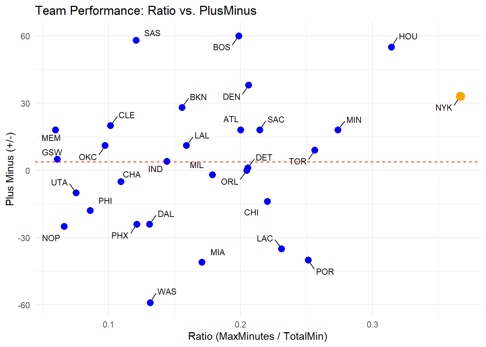
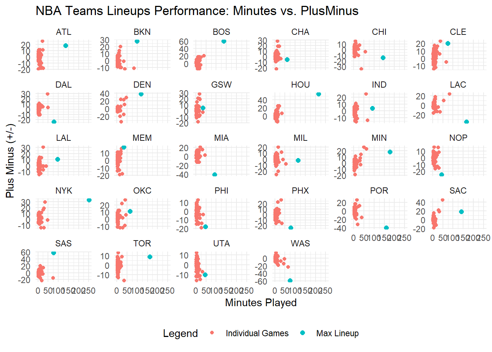

The New York Knicks don’t like going to their bench
lowercaseword
lowercaseword
lowercaseword
Author
Jonathan Iacovacci
Published
October 22, 2024
It’s no secret that New York Knicks head coach Tom Thibideau has one of the most grueling rotations in the NBA, opting for an 7-8 Man rotation rather than looking at most of his bench. This is anchored by a starting lineup that has seen the most minutes in the NBA this season thus far.
Code
library(hoopR)
Warning: package 'hoopR' was built under R version 4.4.2
Code
library(tidyverse)
Warning: package 'tidyverse' was built under R version 4.4.2
Warning: package 'ggplot2' was built under R version 4.4.2
── Attaching core tidyverse packages ──────────────────────── tidyverse 2.0.0 ──
✔ dplyr 1.1.4 ✔ readr 2.1.5
✔ forcats 1.0.0 ✔ stringr 1.5.1
✔ ggplot2 3.5.1 ✔ tibble 3.2.1
✔ lubridate 1.9.3 ✔ tidyr 1.3.1
✔ purrr 1.0.2
── Conflicts ────────────────────────────────────────── tidyverse_conflicts() ──
✖ dplyr::filter() masks stats::filter()
✖ dplyr::lag() masks stats::lag()
ℹ Use the conflicted package (<http://conflicted.r-lib.org/>) to force all conflicts to become errors
# A tibble: 2,000 × 57
GROUP_SET GROUP_ID GROUP_NAME TEAM_ID TEAM_ABBREVIATION GP W L
<chr> <chr> <chr> <chr> <chr> <chr> <chr> <chr>
1 Lineups -1626157-16… K. Towns … 161061… NYK 14 8 6
2 Lineups -1627832-16… F. VanVle… 161061… HOU 15 10 5
3 Lineups -201144-203… M. Conley… 161061… MIN 13 8 5
4 Lineups -201935-162… J. Harden… 161061… LAC 11 6 5
5 Lineups -1627751-16… J. Poeltl… 161061… TOR 12 2 10
6 Lineups -203924-162… J. Grant … 161061… POR 10 3 7
7 Lineups -202696-203… N. Vučevi… 161061… CHI 12 6 6
8 Lineups -202699-203… T. Harris… 161061… DET 11 4 7
9 Lineups -201942-162… D. DeRoza… 161061… SAC 10 6 4
10 Lineups -203484-162… K. Caldwe… 161061… ORL 9 6 3
# ℹ 1,990 more rows
# ℹ 49 more variables: W_PCT <chr>, MIN <chr>, FGM <chr>, FGA <chr>,
# FG_PCT <chr>, FG3M <chr>, FG3A <chr>, FG3_PCT <chr>, FTM <chr>, FTA <chr>,
# FT_PCT <chr>, OREB <chr>, DREB <chr>, REB <chr>, AST <chr>, TOV <chr>,
# STL <chr>, BLK <chr>, BLKA <chr>, PF <chr>, PFD <chr>, PTS <chr>,
# PLUS_MINUS <chr>, GP_RANK <chr>, W_RANK <chr>, L_RANK <chr>,
# W_PCT_RANK <chr>, MIN_RANK <chr>, FGM_RANK <chr>, FGA_RANK <chr>, …
Code
fidata <- data |>select(TEAM_ABBREVIATION,GROUP_NAME,MIN,PLUS_MINUS) fidata$MIN <-as.numeric(fidata$MIN)fidata |>arrange(desc(MIN))
# A tibble: 2,000 × 4
TEAM_ABBREVIATION GROUP_NAME MIN PLUS_MINUS
<chr> <chr> <dbl> <chr>
1 NYK K. Towns - O. Anunoby - J. Hart - M. Brid… 251. 33
2 HOU F. VanVleet - D. Brooks - J. Green - A. S… 214. 55
3 MIN M. Conley - R. Gobert - J. Randle - A. Ed… 177. 18
4 LAC J. Harden - N. Powell - I. Zubac - D. Jon… 166. -35
5 TOR J. Poeltl - R. Barrett - O. Agbaji - D. M… 161. 9
6 POR J. Grant - A. Simons - D. Ayton - D. Avdi… 160. -40
7 CHI N. Vučević - Z. LaVine - C. White - P. Wi… 143. -14
8 DET T. Harris - T. Hardaway Jr. - C. Cunningh… 142. 1
9 SAC D. DeRozan - D. Sabonis - D. Fox - K. Hue… 141. 18
10 ORL K. Caldwell-Pope - G. Bitadze - F. Wagner… 138. 0
# ℹ 1,990 more rows
Not only do the Knicks have a lineup that plays the most minutes, they also make the least amount of lineups in the league, tied with the Minnesota Timberwolves at 44. For reference, the Jazz and Hawks are tied at the top of the list with 82, nearly double what the Knicks set.
Code
data |>group_by(TEAM_ABBREVIATION) |>summarize(Count =n()) |>arrange((Count))
# A tibble: 30 × 2
TEAM_ABBREVIATION Count
<chr> <int>
1 MIN 41
2 NYK 43
3 DEN 48
4 LAC 53
5 WAS 53
6 MIA 54
7 DET 56
8 ORL 60
9 HOU 61
10 BOS 62
# ℹ 20 more rows
Well is this done for a reason, and if so how does the compare to the league when it comes to total minutes from the team. From this we add up all the minutes for each team and take out their lineup with the most amount of minutes this season. This doesn’t nessarily mean the lineup with the most amount of starts as things change. By dividing the number of minutes from this Max Minute Lineup by the total amount of minutes, we get ratios of Max to Total. The Knicks of course lead this, with almost 36% of their lineup coming from their starters.
# A tibble: 30 × 5
TEAM_ABBREVIATION TotalMin MaxMinutes PlusMinus Ratio
<chr> <dbl> <dbl> <chr> <dbl>
1 NYK 685. 251. 33 0.367
2 HOU 681. 214. 55 0.314
3 MIN 646. 177. 18 0.274
4 TOR 629. 161. 9 0.256
5 POR 636. 160. -40 0.251
6 LAC 720. 166. -35 0.231
7 CHI 648. 143. -14 0.220
8 SAC 656. 141. 18 0.214
9 DEN 571. 118. 38 0.206
10 DET 693. 142. 1 0.205
# ℹ 20 more rows
When looking at the distribution of this and Plus Minus, Thibdeous antics don’t seem justified, with their lineup only 8 points above the Plus-Minus average. Other teams are able to put this out with far less minutes where the starting lineup isn’t on the floor for more than a third of the game.
Code
result$PlusMinus <-as.numeric(result$PlusMinus)NewYork <- result |>filter(TEAM_ABBREVIATION =="NYK")avgplus <- result |>summarize(mean(PlusMinus, na.rm =TRUE)) |>pull(1)ggplot(data = result, aes(x = Ratio, y = PlusMinus)) +geom_point(color ="blue", size =3) +geom_text_repel(aes(label = TEAM_ABBREVIATION),size =3, max.overlaps =10, box.padding =0.5, point.padding =0.5) +geom_point(data = NewYork, aes(x = Ratio, y = PlusMinus), color ="orange", size =4) +geom_hline(yintercept = avgplus, linetype ="dashed", color ="red") +labs(title ="Team Performance: Ratio vs. PlusMinus",x ="Ratio (MaxMinutes / TotalMin)",y ="Plus Minus (+/-)" ) +theme_minimal()

This is where you look at the bench, how do they stack up to the rest of the league?
First, lets look at their lineups, and as you can see, they have some success with Jericho Sims taking the lead role at center, as Karl Anthony Towns is adjusting to the lineup. But he’s still relied on a bunch, taking a massive amount of minutes in the Knicks starting lineup. But other than subbing in McBride and the new experiment with Cam Payne, no other lineup that has meaningful minutes are much above the 10 Plus Minus the main lineup has.
# A tibble: 43 × 4
TEAM_ABBREVIATION MIN GROUP_NAME PLUS_MINUS
<chr> <dbl> <chr> <dbl>
1 NYK 251. K. Towns - O. Anunoby - J. Hart - M. Bri… 33
2 NYK 35.2 O. Anunoby - M. Bridges - J. Brunson - M… 29
3 NYK 28.9 K. Towns - O. Anunoby - J. Hart - J. Bru… 19
4 NYK 25.9 K. Towns - C. Payne - J. Hart - M. Bridg… 16
5 NYK 6.92 K. Towns - C. Payne - O. Anunoby - J. Ha… 12
6 NYK 16.7 K. Towns - J. Hart - M. Bridges - J. Bru… 11
7 NYK 6.24 C. Payne - O. Anunoby - J. Hart - M. Bri… 11
8 NYK 4.32 K. Towns - C. Payne - J. Hart - T. Kolek… 11
9 NYK 2.95 C. Payne - M. Bridges - J. Brunson - J. … 8
10 NYK 7.64 K. Towns - C. Payne - J. Hart - M. Bridg… 7
# ℹ 33 more rows
Nothing on the bench really justifies a need to diversify the lineup. The Knicks starting lineup is one of the best in the league
Code
# Ensure MIN and MaxMinutes are numeric# Ensure MIN and PLUS_MINUS are numericKnicks <- data |>filter(TEAM_ABBREVIATION =="NYK") |>mutate(MIN =as.numeric(MIN), PLUS_MINUS =as.numeric(PLUS_MINUS))NewYork <- result |>filter(TEAM_ABBREVIATION =="NYK") |>mutate(MaxMinutes =as.numeric(MaxMinutes), PlusMinus =as.numeric(PlusMinus))# Create the plotggplot() +geom_point(data = Knicks, aes(x = MIN, y = PLUS_MINUS), color ="blue") +geom_point(data = Knicks, aes(x =251, y =33), color ="orange", size =4) +geom_hline(yintercept =10, linetype ="dashed", color ="red") +scale_x_continuous(limits =c(0, 252)) +scale_y_continuous(limits =c(-14, 34)) +labs(title ="Knicks Lineups Performance: Minutes vs. PlusMinus",x ="Minutes Played",y ="Plus Minus (+/-)" ) +theme_minimal()
Warning in geom_point(data = Knicks, aes(x = 251, y = 33), color = "orange", : All aesthetics have length 1, but the data has 43 rows.
ℹ Please consider using `annotate()` or provide this layer with data containing
a single row.
How does this compare to the rest of the league? Well here that is visualized. As you can see the Knicks stand out by trustng their starting lineup to do well compared to the rest of the league.
Code
library(ggplot2)library(ggrepel)library(dplyr)data <- data |>mutate(MIN =as.numeric(MIN), PLUS_MINUS =as.numeric(PLUS_MINUS))result <- result |>mutate(MaxMinutes =as.numeric(MaxMinutes), PlusMinus =as.numeric(PlusMinus))# Define the list of team abbreviationsteam_abbreviations <-c("NYK", "HOU", "MIN", "TOR", "POR", "LAC", "CHI", "SAC", "DEN", "DET,ORL", "BOS", "ATL", "MIL", "MIA", "LAL", "BKN", "IND", "WAS", "DAL", "PHX", "SAS", "CHA", "CLE", "OKC", "PHI", "UTA", "NOP", "GSW", "MEM")# Filter the data to include only the specified teamsdata <- data |>filter(TEAM_ABBREVIATION %in% team_abbreviations)result <- result |>filter(TEAM_ABBREVIATION %in% team_abbreviations)# Create the plot with facet_wrap and free scalesggplot() +geom_point(data = data, aes(x = MIN, y = PLUS_MINUS, color ="Individual Games")) +geom_point(data = result, aes(x = MaxMinutes, y = PlusMinus, color ="Max Lineup"), size =2) +facet_wrap(~TEAM_ABBREVIATION, scales ="free_y") +scale_x_continuous(limits =c(0, 252)) +labs(title ="NBA Teams Lineups Performance: Minutes vs. PlusMinus",x ="Minutes Played",y ="Plus Minus (+/-)",color ="Legend" ) +theme_minimal() +theme(legend.position ="bottom")

Look at teams that are closer to their other lineups. Teams like the Wizards have to rely on roster turnover because their normal starting lineup was so bad. The Pelicans are an interesting team because their team is massively hurt by injury. The Sixers are also trying to figure things out with their stars not doing their normal work.
The Knicks are an insane outlier on this graph. The Raptors come close, but they don’t out work the Knicks nearly to the degree, with nearly 40 less minutes this season. The Knicks stand out the most by Thibdeou’s grueling starting rotation.